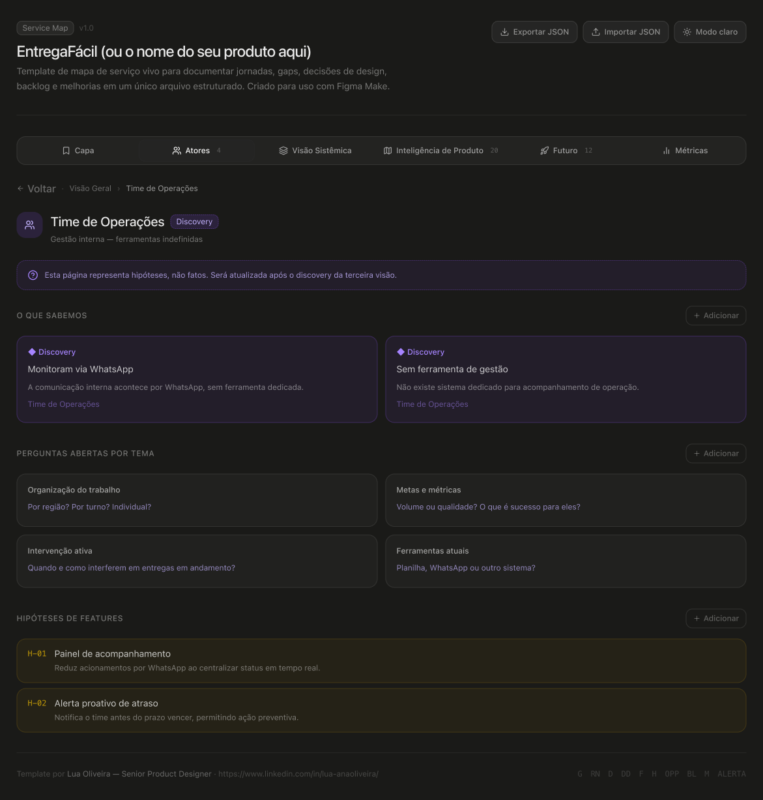
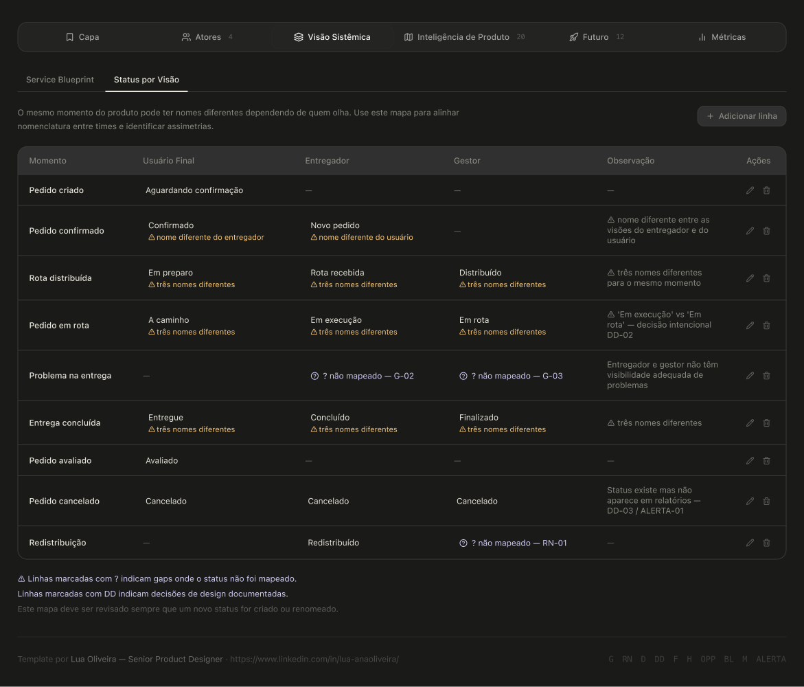
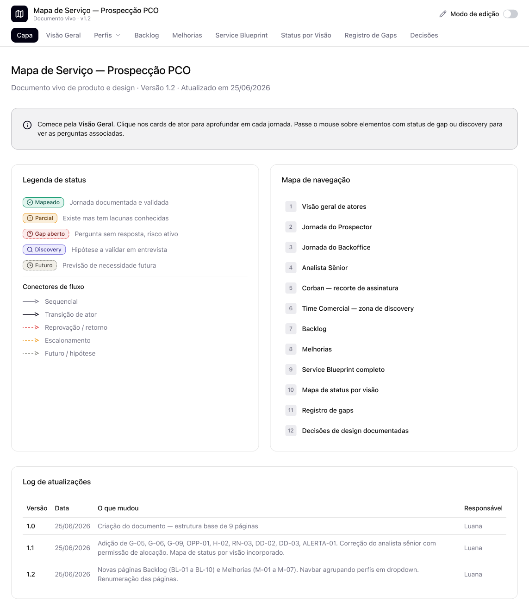
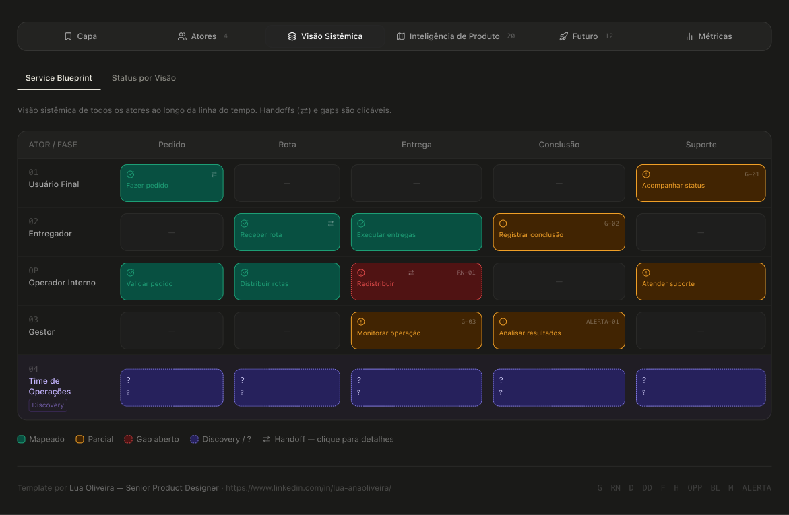
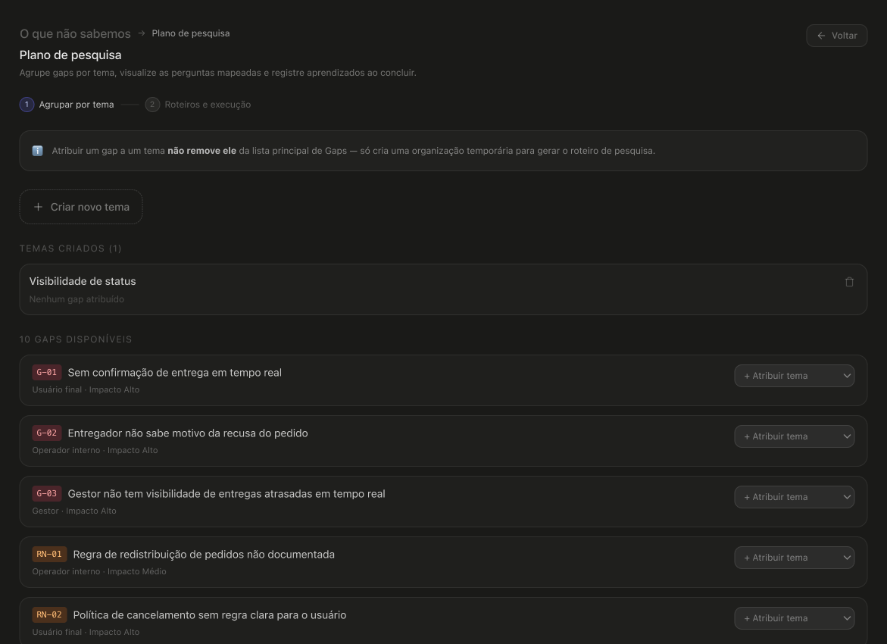
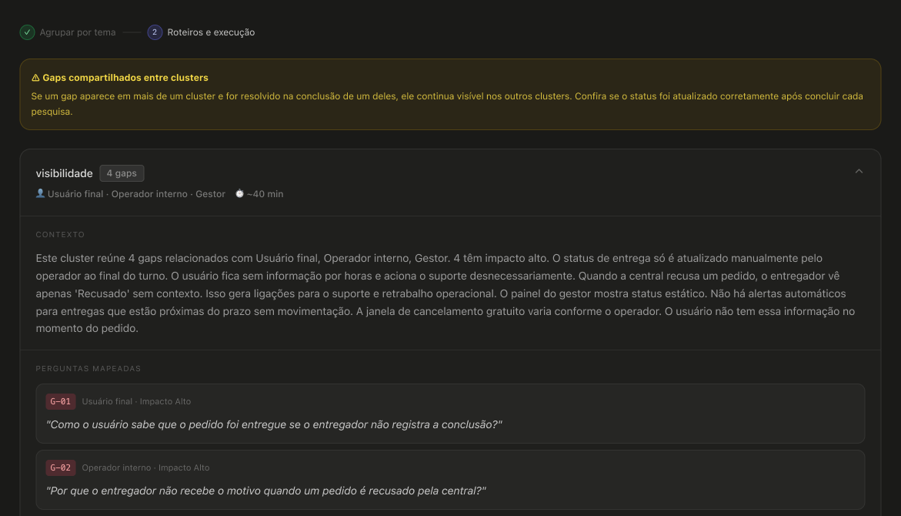

Internamente ele se chama Mapa de Serviço. E era isso mesmo quando nasceu.
Só que service map clássico mapeia jornada, atores e bastidores. Esse aqui acabou com histórico de decisões, regras de negócio com status, backlog, melhorias, visão de futuro, métricas e um gerador de roteiro de pesquisa. Em algum momento ele deixou de ser um mapa e virou um sistema que contém um mapa.
Mantive o nome interno porque é como o time chama. Mas aqui eu apresento pelo que ele virou.
Começou como conversa. Eu tinha um discovery em vista e queria tentar não ser pega de surpresa: começar um discovery pra 1 problema e sair de lá com mais 3.
Então lá estava eu estressando o Prospecção junto com o Claude, que a essa altura eu já chamava de Claudinho, pedindo pra ele ser crítico comigo: fazer perguntas, apontar o que eu não estava vendo, encontrar falhas em cenários que eu tinha criado, explorar cenários e atores que eu não tinha considerado. Não era pra gerar nada. Era pra pensar melhor. (Óbvio, tendo pensamento crítico pra avaliar se o que ele apontava fazia sentido ou não.)
E foi nessa parceria de estresse que eu percebi o tamanho do problema. Não o problema do produto: o problema da quantidade de coisa que o produto tinha e que não estava registrada em lugar nenhum.
Minha primeira ideia foi criar um agente com essa base de conhecimento, tipo um NotebookLM. Guardar tudo lá e consultar por conversa. Mas quanto mais eu estruturava, mais eu percebia que informação de produto precisa ser vista, não só perguntada. Você precisa bater o olho e entender onde estão os buracos. Foi aí que virou plataforma.
No começo, o usuário era eu. E talvez virasse uma documentação pra não depender da memória de ninguém.
Depois, virou o time. Percebi que design, conteúdo, a CJ, o PO, dev e até negócio poderiam se beneficiar. Existe Jira, existe Azure, eu sei. Mas o propósito é outro: eles gerenciam tarefa, esse aqui guarda entendimento.
E aí, a comunidade. Quando o produto ganhou robustez, ficou claro que a estrutura era replicável pra outros produtos complexos, não só pro meu.
Cada troca de usuário criou um problema novo de design. E o maior deles veio da segunda: se o time vai usar, como duas pessoas trabalham no mesmo arquivo?
O Figma Make não salva as alterações. Cada pessoa mexe, salva no navegador dela, e ninguém mais vê. Sai e entra de novo, perde tudo. Ferramenta de uma pessoa só, por construção.
Fui atrás do caminho certo: um backend pra guardar o estado. O Figma até oferece uma opção que se integra, mas não é homologada pelo banco. Fim da linha por ali.
Então desenhei a melhor solução possível dentro da restrição real: exportar e importar JSON. A pessoa faz os ajustes, exporta o arquivo, e a partir daí funciona de dois jeitos. Ou existe um guardião que centraliza e sobe as atualizações, ou cada um exporta e manda o JSON no chat do próprio Make pedindo pra aplicar as alterações.
Não é a solução ideal. Mas é o que dá pra fazer. E documentar isso honestamente vale mais do que fingir que não tinha limitação, porque produto em ambiente regulado é feito de restrição que você não escolheu.
Uma jornada parcialmente mapeada e uma jornada em discovery são coisas diferentes, e tratá-las igual é mentira visual.
O Analista Sênior tem jornada parcial: eu sei algumas coisas, tenho regras, faltam pedaços. O Time Comercial está em discovery puro: o que comem? Onde vivem? Como se comunicam? É hipótese, não fato.
Criei uma zona visualmente separada, com banner explícito: "esta visão ainda é composta por hipóteses, não fatos". Assim ninguém lê hipótese como informação confirmada, que é exatamente o tipo de confusão que faz um time construir em cima de suposição.

Essa foi uma das primeiras coisas que mapeei, e nasceu de uma dor real.
Quando um produto atende múltiplos atores em etapas diferentes, o mesmo momento tem nomes diferentes pra cada um. E precisa ter: a ação de cada pessoa é diferente, então o texto é diferente. Isso é proposital.
O problema é quando essa assimetria vira confusão em vez de clareza. Já chegamos a ter uma aba "Detalhe do status" porque o status sozinho não comportava a complexidade da situação. (Hoje caiu, mas o fato de ter existido diz tudo.)
Então montei uma tabela cruzando cada momento com o nome que ele tem para cada ator, e marcando onde ninguém mapeou nada. E aqui, sim, tabela era a ferramenta certa: eu estava comparando muitos itens por múltiplos critérios.
Não é anti-tabela. É anti-tabela-no-piloto-automático.

Isso não é campo vazio. É um status legítimo, com cor, ícone e peso igual aos outros.
A lógica: hoje o mercado (e o banco em particular) cobra métrica. Se o produto não tem, ele precisa ser muito bem defendido. Meu produto não tem instrumentação. Mas ele poderia ter, e no dia em que alguém decidir medir, a pergunta "o que faz sentido medir aqui?" já está respondida.
E tem um recado pra quem é designer: mesmo quando você não pode aplicar métrica, saber quais métricas fariam sentido faz parte do trabalho. É isso que sustenta defender uma decisão de design ou justificar uma melhoria de jornada.
Quando o conteúdo cresceu, as abas principais ficaram pesadas demais. O caminho óbvio seria virar menu com hierarquia.
Mas isso é uma ferramenta de consulta. Consulta não pode ter navegação profunda: se você precisa lembrar onde clicou pra achar algo, o sistema falhou.
Então agrupei por tema em sub-abas dentro da aba principal. Tudo continua acessível numa única camada de interação, sem esconder conteúdo atrás de dois cliques.
Vale ser precisa sobre como isso foi construído, porque é um modo de trabalho novo e fácil de descrever mal.
A arquitetura foi minha. Levei pro Figma Make um documento estruturado em markdown: quais abas existem, o que vive em cada uma, qual é o comportamento esperado. Não era diretriz visual, era diretriz de estrutura e comportamento.
A execução foi do Make. Ele gerou a primeira versão navegável, e ela não ficou ruim.


A curadoria crítica foi minha, e foi onde o design aconteceu de verdade. A primeira versão tinha o JSON esquisito e tratava a edição como "modo de edição" apensado, em vez de comportamento natural do sistema. Pedi dark mode (sou uma garota do dark mode 💅🏻, e imagino que outras pessoas se beneficiem). E aí vieram os conflitos de contraste, que precisaram ser corrigidos na mão, um por um.
IA generativa não entrega acessibilidade sozinha (infelizmente). Isso continua sendo trabalho de designer.
E as decisões estruturais que apareceram depois (as sub-abas, a zona de discovery, o status "não sabemos") nasceram de uso real, não de geração.
O que separa isso de mais uma documentação é que ele gera artefato.
Estou construindo dentro dele um "gerador de plano de pesquisa": você seleciona os gaps que quer investigar, agrupa por tema, e ele monta os roteiros de entrevista com objetivo de sessão. O que estou vendo se é possível adicionar: perfil sugerido de participante e status pra acompanhar conforme a pesquisa avança.


O mapa de dores vira insumo de discovery automaticamente. Em vez de chegar numa reunião tentando lembrar "a gente já falou disso? quando?", eu chego com um roteiro base, montado do que já estava registrado. (Em construção — essa parte ainda não está fechada.)
Está em uso, na v1.3, por mim. Já apliquei a mesma estrutura no DW Safer, o que provou que a lógica replica.
O time gostou, algumas pessoas do meu produto estão usando. Minha liderança gostou. Mas ele não foi adotado formalmente nem escalado pra outros produtos, e eu não sei se vai ser. Eu acredito que poderia 🤷🏻♀️. Mas não vou vender adoção que não aconteceu.
O que existe de concreto: uma ferramenta que resolve um problema real de um jeito replicável, e um template genérico preparado pra comunidade, com dados fictícios (porque dado de produto real não sai de casa).
Template genérico no Figma Community
→ estrutura replicável pra outros produtos complexos
Documentar não é sobre organização. É sobre resiliência.
Hoje eu sou a pessoa que lembra por que aquela decisão foi tomada. Mas produto que depende da memória de uma pessoa é produto refém. O sistema existe pra que o conhecimento não more na cabeça de ninguém, inclusive na minha.